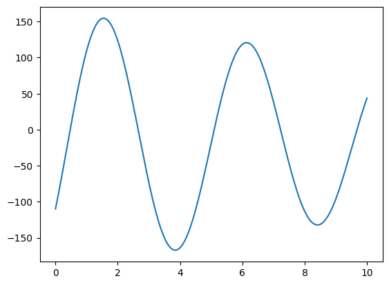

from google.colab import drive
drive.mount('/content/drive')Mounted at /content/drivehttps://www.nature.com/articles/s41597-020-0386-x https://physionet.org/content/ecg-arrhythmia/1.0.0/
from google.colab import drive
drive.mount('/content/drive')Mounted at /content/driveimport numpy as np
import matplotlib.pyplot as plt
import scipy.io as sio
import scipy.signal as signal
from scipy.signal import freqz, butter, cheby1, firwin
from scipy.optimize import curve_fitdata_path = "/content/drive/MyDrive/ECG_Dataset/"data = sio.loadmat(data_path+"JS00001.mat")print(type(data))<class 'dict'>print(data.keys())dict_keys(['val'])print(type(data["val"]))<class 'numpy.ndarray'>print(data["val"].shape)(12, 5000)lead_10 = data["val"][9, :]t0 = 0
tf = 10
t = np.linspace(t0, tf, 5000)fig01 = plt.figure()
plt.plot(t,lead_10)
ecg_fft = np.fft.fft(lead_10)
ecg_fftarray([ -50343. +0.j ,
-44427.87292792 -48118.33430899j,
-14003.60280291-331886.8477886j , ...,
-134619.87742102 -46991.97629606j,
-14003.60280291+331886.8477886j ,
-44427.87292792 +48118.33430899j])mag_ecg_fft = np.abs(ecg_fft)
f_vect = np.fft.fftfreq(len(mag_ecg_fft))plt.plot(mag_ecg_fft)N = len(mag_ecg_fft)
f_vect1 = 500*f_vect[:np.uint(N/2)]
mag_ecg_fft1 = mag_ecg_fft[:np.uint(N/2)]plt.plot(f_vect1, mag_ecg_fft1)
plt.grid()
plt.xlabel("Frequency (Hz)")Text(0.5, 0, 'Frequency (Hz)')plt.plot(f_vect1, mag_ecg_fft1**2)
plt.grid()fs = 500
fcut = 50
order = 4
f_corte = fcut/(fs/2)
b, a = signal.butter(order, f_corte, "lowpass")def plot_filter_response(b, a=1, fs=1.0):
"""Grafica la respuesta en frecuencia de un filtro dado."""
w, h = freqz(b, a, worN=2048, fs=fs) # Calcula la respuesta en frecuencia
# Magnitud de la respuesta en frecuencia
plt.figure(figsize=(10, 6))
plt.subplot(2, 1, 1)
plt.plot(w, 20 * np.log10(abs(h)), "b")
plt.title("Respuesta en Frecuencia del Filtro")
plt.xlabel("Frecuencia [Hz]")
plt.ylabel("Magnitud [dB]")
plt.grid()
# Fase de la respuesta en frecuencia
plt.subplot(2, 1, 2)
plt.plot(w, np.angle(h), "g")
plt.xlabel("Frecuencia [Hz]")
plt.ylabel("Fase [radianes]")
plt.grid()
plt.tight_layout()
plt.show()
# Parámetros del filtro
fs = 1000 # Frecuencia de muestreo en Hz
cutoff = 200 # Frecuencia de corte en Hz
order = 4 # Orden del filtro
# Filtro IIR Butterworth
b_iir, a_iir = butter(order, cutoff, fs=fs, btype="low", analog=False)
print("Filtro IIR Butterworth")
plot_filter_response(b_iir, a_iir, fs=fs)
# Filtro FIR (ventana de Hamming)
numtaps = 50 # Número de coeficientes del FIR
b_fir = firwin(numtaps, cutoff, fs=fs, window="hamming")
print("Filtro FIR (Ventana de Hamming)")
plot_filter_response(b_fir, fs=fs)ecg_filt_1 = signal.lfilter(b, a, lead_10)
ecg_filt_2 = signal.filtfilt(b, a, lead_10) # No causal.plt.plot(t, ecg_filt_1)
plt.plot(t, ecg_filt_2)plt.plot(t, ecg_filt_2)mag_ecg_filt = np.abs(np.fft.fft(ecg_filt_2))[:np.uint(N/2)]
plt.plot(f_vect1, mag_ecg_fft1)
plt.plot(f_vect1, mag_ecg_filt)
plt.grid()
plt.xlabel("Frequency (Hz)")Text(0.5, 0, 'Frequency (Hz)')def modelo_artefacto(time, p0, p1, p2, p3, p4):
return p0+p1*np.sin(p2*time)+p3*np.cos(p4*time)popt, pcov = curve_fit(modelo_artefacto, t, ecg_filt_2)popt[1]152.2437794044702plt.plot(t, modelo_artefacto(t, *popt))
plt.plot(t, ecg_filt_2-modelo_artefacto(t, *popt))